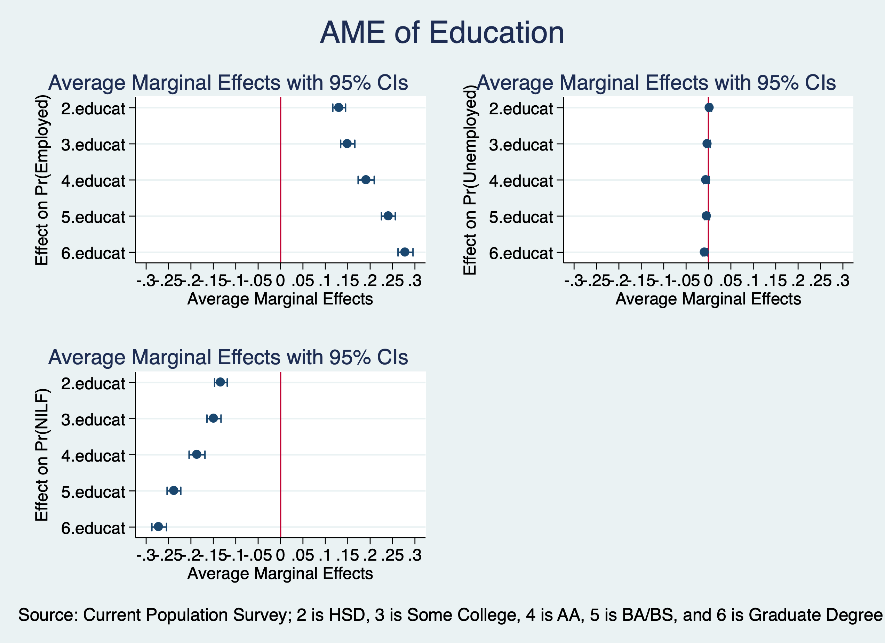
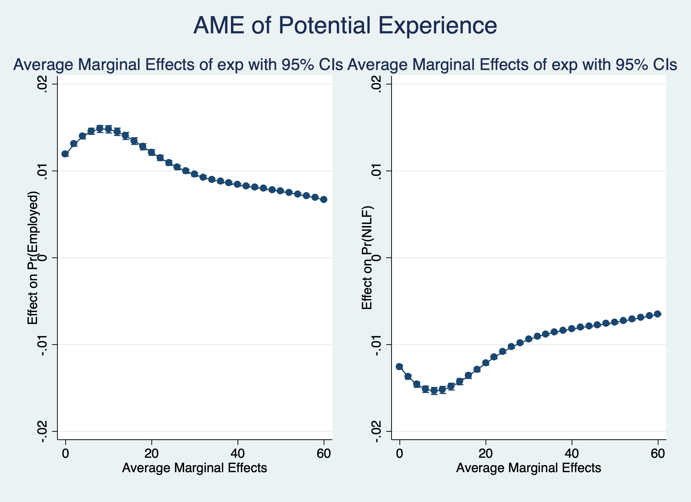
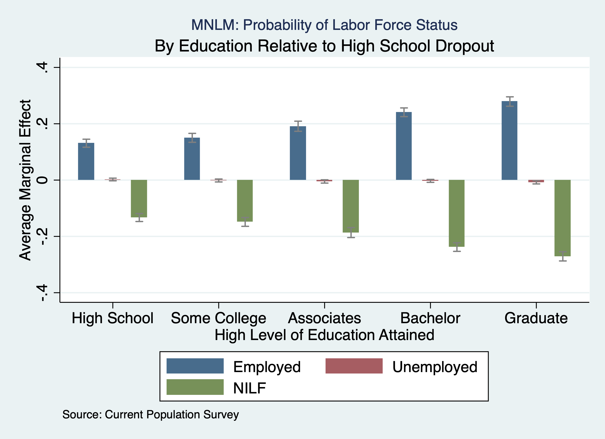

Chapter 2 Multinominal Logit
When we have nominal categorical variables, we cannot use a binary logit or probit. We will need to use multinomial logit or probit.
Lesson: Interpreting a nominal categorical dependent variable We will use Current Population Survey Data from September 2023 and 2024 to estimate the following model for labor force participation: \[ lfs_{i}=\beta_{0}+\beta_1 edu_{i} + \beta_2 exper_i + ... + u_i \].
There are three alternatives: Employed, Unemployed, and Not in the Labor Force.
Example Current Population Survey
use "/Users/Sam/Desktop/Econ 645/Data/CPS/mlogit_example.dta", clear
tab laborforce
tab laborforce, nolabelLabor Force |
Status | Freq. Percent Cum.
------------+-----------------------------------
Employed | 23,760 57.12 57.12
Unemployed | 832 2.00 59.12
NILF | 17,007 40.88 100.00
------------+-----------------------------------
Total | 41,599 100.00
Labor Force |
Status | Freq. Percent Cum.
------------+-----------------------------------
1 | 23,760 57.12 57.12
2 | 832 2.00 59.12
3 | 17,007 40.88 100.00
------------+-----------------------------------
Total | 41,599 100.00Our dependent variable has three nominal categories. \[ y=[1,2,3] \] оr \[ y=[Employed, Unemployed, NILF] \]
We use the mlogit command to run a multinomial logit to get log odds for \(J-1\) logits.
mlogit laborforce i.educat exp exp2 i.race_ethnicity i.female i.metroarea i.union i.marital i.hryear4Iteration 0: log likelihood = -31774.039
Iteration 1: log likelihood = -22975.759
Iteration 2: log likelihood = -22620.368
Iteration 3: log likelihood = -22573.244
Iteration 4: log likelihood = -22565.789
Iteration 5: log likelihood = -22564.343
Iteration 6: log likelihood = -22564.014
Iteration 7: log likelihood = -22563.941
Iteration 8: log likelihood = -22563.925
Iteration 9: log likelihood = -22563.922
Iteration 10: log likelihood = -22563.922
Iteration 11: log likelihood = -22563.922
Iteration 12: log likelihood = -22563.922
Multinomial logistic regression Number of obs = 41,599
LR chi2(38) = 18420.23
Prob > chi2 = 0.0000
Log likelihood = -22563.922 Pseudo R2 = 0.2899
-------------------------------------------------------------------------------------------
laborforcestatus | Coef. Std. Err. z P>|z| [95% Conf. Interval]
--------------------------+----------------------------------------------------------------
Employed | (base outcome)
--------------------------+----------------------------------------------------------------
Unemployed |
educat |
HSD | -.2279524 .1119685 -2.04 0.042 -.4474066 -.0084982
Some College | -.4312492 .1303621 -3.31 0.001 -.6867542 -.1757442
AA/Vocational | -.6931682 .165487 -4.19 0.000 -1.017517 -.3688197
BS/BA | -.6706784 .1331892 -5.04 0.000 -.9317245 -.4096323
Graduate or Professional | -1.063383 .1745188 -6.09 0.000 -1.405433 -.7213323
|
exp | -.0291051 .0088759 -3.28 0.001 -.0465016 -.0117087
exp2 | .0002524 .0001575 1.60 0.109 -.0000562 .0005611
|
race_ethnicity |
Asian/Pacific Islander | -.813795 .3012644 -2.70 0.007 -1.404262 -.2233275
Black | -.3951124 .2756281 -1.43 0.152 -.9353337 .1451088
Hispanic/Latino | -.6504449 .2691511 -2.42 0.016 -1.177971 -.1229184
White | -.7855686 .2616547 -3.00 0.003 -1.298402 -.2727347
Multiracial | -.4798449 .3366208 -1.43 0.154 -1.13961 .1799197
|
female |
Female | -.0004137 .0721979 -0.01 0.995 -.141919 .1410915
|
metroarea |
Nonmetro Area | -.1010417 .097797 -1.03 0.302 -.2927204 .0906369
Not Identified | .0635435 .346152 0.18 0.854 -.614902 .741989
|
union |
Union | -19.66515 2339.277 -0.01 0.993 -4604.564 4565.234
|
marital |
Divorced/Sep/Widowed | .6132556 .1175463 5.22 0.000 .3828691 .843642
Never Married | .7526873 .0988405 7.62 0.000 .5589634 .9464112
|
hryear4 |
2024 | .0228376 .071126 0.32 0.748 -.1165667 .1622419
|
_cons | -2.023219 .3012462 -6.72 0.000 -2.613651 -1.432787
--------------------------+----------------------------------------------------------------
NILF |
educat |
HSD | -.7898216 .0425444 -18.56 0.000 -.8732071 -.7064361
Some College | -.8941042 .0479568 -18.64 0.000 -.9880978 -.8001105
AA/Vocational | -1.143176 .0559087 -20.45 0.000 -1.252755 -1.033597
BS/BA | -1.493236 .0488335 -30.58 0.000 -1.588948 -1.397524
Graduate or Professional | -1.746904 .0561914 -31.09 0.000 -1.857038 -1.636771
|
exp | -.1490983 .003087 -48.30 0.000 -.1551487 -.143048
exp2 | .0031412 .0000469 66.92 0.000 .0030492 .0032332
|
race_ethnicity |
Asian/Pacific Islander | -.1995846 .1336975 -1.49 0.135 -.4616269 .0624578
Black | -.1053158 .1293382 -0.81 0.415 -.358814 .1481824
Hispanic/Latino | -.4785722 .1270357 -3.77 0.000 -.7275575 -.2295869
White | -.3378929 .1237786 -2.73 0.006 -.5804944 -.0952913
Multiracial | -.1802636 .1537778 -1.17 0.241 -.4816625 .1211354
|
female |
Female | .5781835 .0258942 22.33 0.000 .5274318 .6289351
|
metroarea |
Nonmetro Area | -.0069684 .0328081 -0.21 0.832 -.0712712 .0573344
Not Identified | -.0021328 .1282129 -0.02 0.987 -.2534254 .2491598
|
union |
Union | -20.25621 566.9973 -0.04 0.972 -1131.55 1091.038
|
marital |
Divorced/Sep/Widowed | -.0531382 .0373157 -1.42 0.154 -.1262757 .0199993
Never Married | .1464745 .0379587 3.86 0.000 .0720769 .2208722
|
hryear4 |
2024 | -.0398405 .0253899 -1.57 0.117 -.0896037 .0099228
|
_cons | 1.072448 .1365064 7.86 0.000 .8049003 1.339996
-------------------------------------------------------------------------------------------
Note: 2044 observations completely determined. Standard errors questionable.Next, we need to test our Independence of Irrelevant Alternatives (IIA) assumption with a Hausman Test.
Estimate an Unrestricted model - We’ll remove unemployed
quietly mlogit laborforce i.educat exp exp2 i.race_ethnicity i.female i.metroarea i.union i.marital i.hryear4
estimates store unrestrictedWe compare the log odds for unemployed and not in the labor force to being employed. Given that these are log odds, we’ll need to convert them to Odds Ratios or find the marginal effects.
Use hausman command
Note: the rank of the differenced variance matrix (2) does not equal the number of coefficients being tested (19);
be sure this is what you expect, or there may be problems computing the test. Examine the output of your
estimators for anything unexpected and possibly consider scaling your variables so that the coefficients
are on a similar scale.
---- Coefficients ----
| (b) (B) (b-B) sqrt(diag(V_b-V_B))
| restricted unrestricted Difference S.E.
-------------+----------------------------------------------------------------
educat |
2 | -.7860864 -.7898216 .0037352 .0035785
3 | -.89149 -.8941042 .0026142 .0032032
4 | -1.140012 -1.143176 .003164 .003669
5 | -1.486705 -1.493236 .0065306 .0036976
6 | -1.737118 -1.746904 .0097867 .0035815
exp | -.1486206 -.1490983 .0004777 .0002218
exp2 | .0031335 .0031412 -7.78e-06 2.91e-06
race_ethni~y |
2 | -.1712505 -.1995846 .0283341 .0120289
3 | -.0717454 -.1053158 .0335704 .0121412
4 | -.4427331 -.4785722 .0358391 .0115676
5 | -.3060009 -.3378929 .031892 .0117006
6 | -.1491388 -.1802636 .0311247 .0136923
1.female | .5793374 .5781835 .0011539 .0018992
metroarea |
2 | -.0070074 -.0069684 -.000039 .002025
3 | -.0064057 -.0021328 -.0042729 .0112617
1.union | -20.20846 -20.25621 .0477553 .
marital |
2 | -.0524486 -.0531382 .0006896 .0022895
3 | .1495841 .1464745 .0031096 .0023193
_cons | 1.00979 1.072448 -.0626578 .
------------------------------------------------------------------------------
b = consistent under Ho and Ha; obtained from mlogit
B = inconsistent under Ha, efficient under Ho; obtained from mlogit
Test: Ho: difference in coefficients not systematic
chi2(2) = (b-B)'[(V_b-V_B)^(-1)](b-B)
= 8.92
Prob>chi2 = 0.0116
(V_b-V_B is not positive definite)Predicted Probabilities
Next, we use Stata to estimate predicted probabilities
quietly mlogit laborforce i.educat exp exp2 i.race_ethnicity i.female i.metroarea i.union i.marital, base(1)
margins, atmeans predict(outcome(1))
margins, atmeans predict(outcome(2))
margins, atmeans predict(outcome(3))Adjusted predictions Number of obs = 41,599
Model VCE : OIM
Expression : Pr(laborforcestatus==Employed), predict(outcome(1))
at : 1.educat = .1261088 (mean)
2.educat = .286954 (mean)
3.educat = .1488497 (mean)
4.educat = .0969254 (mean)
5.educat = .2079617 (mean)
6.educat = .1332003 (mean)
exp = 32.89247 (mean)
exp2 = 1467.595 (mean)
1.race_eth~y = .0098079 (mean)
2.race_eth~y = .0622611 (mean)
3.race_eth~y = .0931032 (mean)
4.race_eth~y = .1487776 (mean)
5.race_eth~y = .6685738 (mean)
6.race_eth~y = .0174764 (mean)
0.female = .4804923 (mean)
1.female = .5195077 (mean)
1.metroarea = .8000673 (mean)
2.metroarea = .1904132 (mean)
3.metroarea = .0095195 (mean)
0.union = .9508642 (mean)
1.union = .0491358 (mean)
1.marital = .5163586 (mean)
2.marital = .1819515 (mean)
3.marital = .3016899 (mean)
------------------------------------------------------------------------------
| Delta-method
| Margin Std. Err. z P>|z| [95% Conf. Interval]
-------------+----------------------------------------------------------------
_cons | .7684672 4.830264 0.16 0.874 -8.698677 10.23561
------------------------------------------------------------------------------
Adjusted predictions Number of obs = 41,599
Model VCE : OIM
Expression : Pr(laborforcestatus==Unemployed), predict(outcome(2))
at : 1.educat = .1261088 (mean)
2.educat = .286954 (mean)
3.educat = .1488497 (mean)
4.educat = .0969254 (mean)
5.educat = .2079617 (mean)
6.educat = .1332003 (mean)
exp = 32.89247 (mean)
exp2 = 1467.595 (mean)
1.race_eth~y = .0098079 (mean)
2.race_eth~y = .0622611 (mean)
3.race_eth~y = .0931032 (mean)
4.race_eth~y = .1487776 (mean)
5.race_eth~y = .6685738 (mean)
6.race_eth~y = .0174764 (mean)
0.female = .4804923 (mean)
1.female = .5195077 (mean)
1.metroarea = .8000673 (mean)
2.metroarea = .1904132 (mean)
3.metroarea = .0095195 (mean)
0.union = .9508642 (mean)
1.union = .0491358 (mean)
1.marital = .5163586 (mean)
2.marital = .1819515 (mean)
3.marital = .3016899 (mean)
------------------------------------------------------------------------------
| Delta-method
| Margin Std. Err. z P>|z| [95% Conf. Interval]
-------------+----------------------------------------------------------------
_cons | .0090578 1.03352 0.01 0.993 -2.016605 2.03472
------------------------------------------------------------------------------
Adjusted predictions Number of obs = 41,599
Model VCE : OIM
Expression : Pr(laborforcestatus==NILF), predict(outcome(3))
at : 1.educat = .1261088 (mean)
2.educat = .286954 (mean)
3.educat = .1488497 (mean)
4.educat = .0969254 (mean)
5.educat = .2079617 (mean)
6.educat = .1332003 (mean)
exp = 32.89247 (mean)
exp2 = 1467.595 (mean)
1.race_eth~y = .0098079 (mean)
2.race_eth~y = .0622611 (mean)
3.race_eth~y = .0931032 (mean)
4.race_eth~y = .1487776 (mean)
5.race_eth~y = .6685738 (mean)
6.race_eth~y = .0174764 (mean)
0.female = .4804923 (mean)
1.female = .5195077 (mean)
1.metroarea = .8000673 (mean)
2.metroarea = .1904132 (mean)
3.metroarea = .0095195 (mean)
0.union = .9508642 (mean)
1.union = .0491358 (mean)
1.marital = .5163586 (mean)
2.marital = .1819515 (mean)
3.marital = .3016899 (mean)
------------------------------------------------------------------------------
| Delta-method
| Margin Std. Err. z P>|z| [95% Conf. Interval]
-------------+----------------------------------------------------------------
_cons | .2224751 4.825216 0.05 0.963 -9.234774 9.679725
------------------------------------------------------------------------------Average Marginal Effects
margins, dydx(*) predict(outcome(1))
margins, dydx(*) predict(outcome(2))
margins, dydx(*) predict(outcome(3))Average marginal effects Number of obs = 41,599
Model VCE : OIM
Expression : Pr(laborforcestatus==Employed), predict(outcome(1))
dy/dx w.r.t. : 2.educat 3.educat 4.educat 5.educat 6.educat exp exp2 2.race_ethnicity 3.race_ethnicity
4.race_ethnicity 5.race_ethnicity 6.race_ethnicity 1.female 2.metroarea 3.metroarea 1.union
2.marital 3.marital
-------------------------------------------------------------------------------------------
| Delta-method
| dy/dx Std. Err. z P>|z| [95% Conf. Interval]
--------------------------+----------------------------------------------------------------
educat |
HSD | .1309012 .0072675 18.01 0.000 .1166572 .1451452
Some College | .1499942 .0080928 18.53 0.000 .1341326 .1658558
AA/Vocational | .1911979 .0091537 20.89 0.000 .1732569 .2091389
BS/BA | .2407492 .0078942 30.50 0.000 .2252768 .2562215
Graduate or Professional | .2789487 .008527 32.71 0.000 .2622362 .2956613
|
exp | .0219808 .0004288 51.26 0.000 .0211403 .0228213
exp2 | -.0004585 5.91e-06 -77.62 0.000 -.00047 -.0004469
|
race_ethnicity |
Asian/Pacific Islander | .0417403 .0212777 1.96 0.050 .0000368 .0834438
Black | .0224391 .0206352 1.09 0.277 -.0180052 .0628834
Hispanic/Latino | .0802357 .0202145 3.97 0.000 .0406159 .1198555
White | .0618266 .0197636 3.13 0.002 .0230907 .1005625
Multiracial | .0348149 .024377 1.43 0.153 -.0129632 .082593
|
female |
Female | -.0839096 .0039186 -21.41 0.000 -.0915899 -.0762292
|
metroarea |
Nonmetro Area | .0022776 .0050425 0.45 0.652 -.0076056 .0121607
Not Identified | -.0007629 .0197304 -0.04 0.969 -.0394337 .0379079
|
union |
Union | .4414329 .0020464 215.71 0.000 .4374219 .4454438
|
marital |
Divorced/Sep/Widowed | .0001626 .0057357 0.03 0.977 -.0110791 .0114043
Never Married | -.030733 .005813 -5.29 0.000 -.0421263 -.0193397
-------------------------------------------------------------------------------------------
Note: dy/dx for factor levels is the discrete change from the base level.
Average marginal effects Number of obs = 41,599
Model VCE : OIM
Expression : Pr(laborforcestatus==Unemployed), predict(outcome(2))
dy/dx w.r.t. : 2.educat 3.educat 4.educat 5.educat 6.educat exp exp2 2.race_ethnicity 3.race_ethnicity
4.race_ethnicity 5.race_ethnicity 6.race_ethnicity 1.female 2.metroarea 3.metroarea 1.union
2.marital 3.marital
-------------------------------------------------------------------------------------------
| Delta-method
| dy/dx Std. Err. z P>|z| [95% Conf. Interval]
--------------------------+----------------------------------------------------------------
educat |
HSD | .0021475 .0023962 0.90 0.370 -.002549 .006844
Some College | -.0014486 .0026367 -0.55 0.583 -.0066165 .0037194
AA/Vocational | -.0048071 .0030039 -1.60 0.110 -.0106946 .0010805
BS/BA | -.0028255 .0026516 -1.07 0.287 -.0080226 .0023715
Graduate or Professional | -.0081376 .0028311 -2.87 0.004 -.0136864 -.0025888
|
exp | .0004047 .0001592 2.54 0.011 .0000928 .0007167
exp2 | -.0000155 2.78e-06 -5.57 0.000 -.0000209 -.00001
|
race_ethnicity |
Asian/Pacific Islander | -.0176565 .0086621 -2.04 0.042 -.034634 -.0006791
Black | -.0099588 .0085704 -1.16 0.245 -.0267565 .0068389
Hispanic/Latino | -.0128404 .0084135 -1.53 0.127 -.0293307 .0036498
White | -.0163498 .0082939 -1.97 0.049 -.0326055 -.0000942
Multiracial | -.0112902 .0095517 -1.18 0.237 -.0300113 .0074308
|
female |
Female | -.0037756 .0013734 -2.75 0.006 -.0064674 -.0010838
|
metroarea |
Nonmetro Area | -.0018498 .0017658 -1.05 0.295 -.0053107 .0016111
Not Identified | .0012508 .0071177 0.18 0.861 -.0126997 .0152012
|
union |
Union | -.0210849 .0007187 -29.34 0.000 -.0224935 -.0196762
|
marital |
Divorced/Sep/Widowed | .0110753 .0024351 4.55 0.000 .0063027 .0158479
Never Married | .0129138 .0018379 7.03 0.000 .0093115 .0165161
-------------------------------------------------------------------------------------------
Note: dy/dx for factor levels is the discrete change from the base level.
Average marginal effects Number of obs = 41,599
Model VCE : OIM
Expression : Pr(laborforcestatus==NILF), predict(outcome(3))
dy/dx w.r.t. : 2.educat 3.educat 4.educat 5.educat 6.educat exp exp2 2.race_ethnicity 3.race_ethnicity
4.race_ethnicity 5.race_ethnicity 6.race_ethnicity 1.female 2.metroarea 3.metroarea 1.union
2.marital 3.marital
-------------------------------------------------------------------------------------------
| Delta-method
| dy/dx Std. Err. z P>|z| [95% Conf. Interval]
--------------------------+----------------------------------------------------------------
educat |
HSD | -.1330487 .0071954 -18.49 0.000 -.1471514 -.118946
Some College | -.1485456 .0079934 -18.58 0.000 -.1642124 -.1328789
AA/Vocational | -.1863908 .0090294 -20.64 0.000 -.2040881 -.1686934
BS/BA | -.2379236 .0077818 -30.57 0.000 -.2531757 -.2226716
Graduate or Professional | -.2708111 .0083689 -32.36 0.000 -.2872139 -.2544084
|
exp | -.0223855 .0004141 -54.06 0.000 -.0231971 -.0215739
exp2 | .0004739 5.54e-06 85.61 0.000 .0004631 .0004848
|
race_ethnicity |
Asian/Pacific Islander | -.0240837 .0207242 -1.16 0.245 -.0647024 .0165349
Black | -.0124803 .0200649 -0.62 0.534 -.0518068 .0268463
Hispanic/Latino | -.0673952 .01964 -3.43 0.001 -.1058889 -.0289016
White | -.0454768 .0191993 -2.37 0.018 -.0831067 -.0078468
Multiracial | -.0235247 .0237295 -0.99 0.322 -.0700337 .0229843
|
female |
Female | .0876852 .0038386 22.84 0.000 .0801616 .0952088
|
metroarea |
Nonmetro Area | -.0004278 .0049292 -0.09 0.931 -.0100888 .0092332
Not Identified | -.0004879 .0192391 -0.03 0.980 -.0381959 .0372201
|
union |
Union | -.420348 .0020016 -210.01 0.000 -.424271 -.4164251
|
marital |
Divorced/Sep/Widowed | -.0112379 .0055186 -2.04 0.042 -.0220542 -.0004216
Never Married | .0178192 .0057407 3.10 0.002 .0065676 .0290707
-------------------------------------------------------------------------------------------
Note: dy/dx for factor levels is the discrete change from the base level.Marginal Effects at the Average
margins, dydx(*) atmeans predict(outcome(1))
margins, dydx(*) atmeans predict(outcome(2))
margins, dydx(*) atmeans predict(outcome(3))Conditional marginal effects Number of obs = 41,599
Model VCE : OIM
Expression : Pr(laborforcestatus==Employed), predict(outcome(1))
dy/dx w.r.t. : 2.educat 3.educat 4.educat 5.educat 6.educat exp exp2 2.race_ethnicity 3.race_ethnicity
4.race_ethnicity 5.race_ethnicity 6.race_ethnicity 1.female 2.metroarea 3.metroarea 1.union
2.marital 3.marital
at : 1.educat = .1261088 (mean)
2.educat = .286954 (mean)
3.educat = .1488497 (mean)
4.educat = .0969254 (mean)
5.educat = .2079617 (mean)
6.educat = .1332003 (mean)
exp = 32.89247 (mean)
exp2 = 1467.595 (mean)
1.race_eth~y = .0098079 (mean)
2.race_eth~y = .0622611 (mean)
3.race_eth~y = .0931032 (mean)
4.race_eth~y = .1487776 (mean)
5.race_eth~y = .6685738 (mean)
6.race_eth~y = .0174764 (mean)
0.female = .4804923 (mean)
1.female = .5195077 (mean)
1.metroarea = .8000673 (mean)
2.metroarea = .1904132 (mean)
3.metroarea = .0095195 (mean)
0.union = .9508642 (mean)
1.union = .0491358 (mean)
1.marital = .5163586 (mean)
2.marital = .1819515 (mean)
3.marital = .3016899 (mean)
-------------------------------------------------------------------------------------------
| Delta-method
| dy/dx Std. Err. z P>|z| [95% Conf. Interval]
--------------------------+----------------------------------------------------------------
educat |
HSD | .1755775 1.437386 0.12 0.903 -2.641647 2.992802
Some College | .196493 1.66501 0.12 0.906 -3.066867 3.459853
AA/Vocational | .240734 2.297249 0.10 0.917 -4.26179 4.743258
BS/BA | .2905963 3.204011 0.09 0.928 -5.98915 6.570342
Graduate or Professional | .3223929 3.782688 0.09 0.932 -7.09154 7.736326
|
exp | .0256925 .3928606 0.07 0.948 -.7443001 .7956851
exp2 | -.0005388 .0083342 -0.06 0.948 -.0168735 .0157959
|
race_ethnicity |
Asian/Pacific Islander | .0449909 .7906855 0.06 0.955 -1.504724 1.594706
Black | .0244574 .4314249 0.06 0.955 -.8211199 .8700347
Hispanic/Latino | .0912758 1.237833 0.07 0.941 -2.334832 2.517383
White | .06928 .9827052 0.07 0.944 -1.856787 1.995347
Multiracial | .0392659 .5722016 0.07 0.945 -1.082229 1.160761
|
female |
Female | -.0981776 1.521079 -0.06 0.949 -3.079437 2.883082
|
metroarea |
Nonmetro Area | .0018837 .0756332 0.02 0.980 -.1463546 .150122
Not Identified | -.0003745 .0562184 -0.01 0.995 -.1105606 .1098116
|
union |
Union | .448807 .0032032 140.11 0.000 .4425288 .4550853
|
marital |
Divorced/Sep/Widowed | .0044561 .5402485 0.01 0.993 -1.054411 1.063324
Never Married | -.0309979 .6401718 -0.05 0.961 -1.285712 1.223716
-------------------------------------------------------------------------------------------
Note: dy/dx for factor levels is the discrete change from the base level.
Conditional marginal effects Number of obs = 41,599
Model VCE : OIM
Expression : Pr(laborforcestatus==Unemployed), predict(outcome(2))
dy/dx w.r.t. : 2.educat 3.educat 4.educat 5.educat 6.educat exp exp2 2.race_ethnicity 3.race_ethnicity
4.race_ethnicity 5.race_ethnicity 6.race_ethnicity 1.female 2.metroarea 3.metroarea 1.union
2.marital 3.marital
at : 1.educat = .1261088 (mean)
2.educat = .286954 (mean)
3.educat = .1488497 (mean)
4.educat = .0969254 (mean)
5.educat = .2079617 (mean)
6.educat = .1332003 (mean)
exp = 32.89247 (mean)
exp2 = 1467.595 (mean)
1.race_eth~y = .0098079 (mean)
2.race_eth~y = .0622611 (mean)
3.race_eth~y = .0931032 (mean)
4.race_eth~y = .1487776 (mean)
5.race_eth~y = .6685738 (mean)
6.race_eth~y = .0174764 (mean)
0.female = .4804923 (mean)
1.female = .5195077 (mean)
1.metroarea = .8000673 (mean)
2.metroarea = .1904132 (mean)
3.metroarea = .0095195 (mean)
0.union = .9508642 (mean)
1.union = .0491358 (mean)
1.marital = .5163586 (mean)
2.marital = .1819515 (mean)
3.marital = .3016899 (mean)
-------------------------------------------------------------------------------------------
| Delta-method
| dy/dx Std. Err. z P>|z| [95% Conf. Interval]
--------------------------+----------------------------------------------------------------
educat |
HSD | .0005216 .0755305 0.01 0.994 -.1475154 .1485587
Some College | -.0012432 .1546272 -0.01 0.994 -.3043069 .3018206
AA/Vocational | -.0029475 .3436986 -0.01 0.993 -.6765844 .6706894
BS/BA | -.0022892 .2747643 -0.01 0.993 -.5408173 .5362389
Graduate or Professional | -.0047363 .5466531 -0.01 0.993 -1.076157 1.066684
|
exp | .0000394 .0076697 0.01 0.996 -.014993 .0150718
exp2 | -4.07e-06 .0004725 -0.01 0.993 -.0009301 .000922
|
race_ethnicity |
Asian/Pacific Islander | -.0089668 1.008282 -0.01 0.993 -1.985164 1.96723
Black | -.0051358 .5753938 -0.01 0.993 -1.132887 1.122615
Hispanic/Latino | -.0069558 .7820821 -0.01 0.993 -1.539809 1.525897
White | -.0084662 .9520543 -0.01 0.993 -1.874458 1.857526
Multiracial | -.0058748 .6589403 -0.01 0.993 -1.297374 1.285625
|
female |
Female | -.0011625 .1324367 -0.01 0.993 -.2607337 .2584087
|
metroarea |
Nonmetro Area | -.0008667 .0980645 -0.01 0.993 -.1930696 .1913361
Not Identified | .0005835 .0659971 0.01 0.993 -.1287684 .1299354
|
union |
Union | -.017075 .0009387 -18.19 0.000 -.0189148 -.0152352
|
marital |
Divorced/Sep/Widowed | .0055891 .631376 0.01 0.993 -1.231885 1.243063
Never Married | .0067698 .7645739 0.01 0.993 -1.491768 1.505307
-------------------------------------------------------------------------------------------
Note: dy/dx for factor levels is the discrete change from the base level.
Conditional marginal effects Number of obs = 41,599
Model VCE : OIM
Expression : Pr(laborforcestatus==NILF), predict(outcome(3))
dy/dx w.r.t. : 2.educat 3.educat 4.educat 5.educat 6.educat exp exp2 2.race_ethnicity 3.race_ethnicity
4.race_ethnicity 5.race_ethnicity 6.race_ethnicity 1.female 2.metroarea 3.metroarea 1.union
2.marital 3.marital
at : 1.educat = .1261088 (mean)
2.educat = .286954 (mean)
3.educat = .1488497 (mean)
4.educat = .0969254 (mean)
5.educat = .2079617 (mean)
6.educat = .1332003 (mean)
exp = 32.89247 (mean)
exp2 = 1467.595 (mean)
1.race_eth~y = .0098079 (mean)
2.race_eth~y = .0622611 (mean)
3.race_eth~y = .0931032 (mean)
4.race_eth~y = .1487776 (mean)
5.race_eth~y = .6685738 (mean)
6.race_eth~y = .0174764 (mean)
0.female = .4804923 (mean)
1.female = .5195077 (mean)
1.metroarea = .8000673 (mean)
2.metroarea = .1904132 (mean)
3.metroarea = .0095195 (mean)
0.union = .9508642 (mean)
1.union = .0491358 (mean)
1.marital = .5163586 (mean)
2.marital = .1819515 (mean)
3.marital = .3016899 (mean)
-------------------------------------------------------------------------------------------
| Delta-method
| dy/dx Std. Err. z P>|z| [95% Conf. Interval]
--------------------------+----------------------------------------------------------------
educat |
HSD | -.1760991 1.475242 -0.12 0.905 -3.06752 2.715321
Some College | -.1952498 1.746298 -0.11 0.911 -3.617932 3.227432
AA/Vocational | -.2377865 2.409215 -0.10 0.921 -4.959762 4.484189
BS/BA | -.2883071 3.317729 -0.09 0.931 -6.790936 6.214322
Graduate or Professional | -.3176566 3.916079 -0.08 0.935 -7.993031 7.357718
|
exp | -.0257319 .3987801 -0.06 0.949 -.8073266 .7558628
exp2 | .0005428 .0084077 0.06 0.949 -.0159359 .0170216
|
race_ethnicity |
Asian/Pacific Islander | -.0360241 .5758254 -0.06 0.950 -1.164621 1.092573
Black | -.0193216 .3135138 -0.06 0.951 -.6337973 .5951541
Hispanic/Latino | -.08432 1.269837 -0.07 0.947 -2.573155 2.404515
White | -.0608138 .9093883 -0.07 0.947 -1.843182 1.721554
Multiracial | -.0333911 .49753 -0.07 0.946 -1.008532 .9417497
|
female |
Female | .0993401 1.526768 0.07 0.948 -2.89307 3.091751
|
metroarea |
Nonmetro Area | -.001017 .0285739 -0.04 0.972 -.0570207 .0549868
Not Identified | -.0002091 .0267367 -0.01 0.994 -.052612 .0521939
|
union |
Union | -.431732 .0031813 -135.71 0.000 -.4379673 -.4254967
|
marital |
Divorced/Sep/Widowed | -.0100452 .2043758 -0.05 0.961 -.4106144 .390524
Never Married | .0242282 .419673 0.06 0.954 -.7983157 .846772
-------------------------------------------------------------------------------------------
Note: dy/dx for factor levels is the discrete change from the base level.Change the Base Alternative
We can also change the base or reference alternative with the base() option
mlogit laborforce i.educat exp exp2 i.race_ethnicity i.female i.metroarea i.union i.marital, base(3)Iteration 0: log likelihood = -31774.039
Iteration 1: log likelihood = -22976.886
Iteration 2: log likelihood = -22621.724
Iteration 3: log likelihood = -22574.602
Iteration 4: log likelihood = -22567.151
Iteration 5: log likelihood = -22565.706
Iteration 6: log likelihood = -22565.376
Iteration 7: log likelihood = -22565.303
Iteration 8: log likelihood = -22565.287
Iteration 9: log likelihood = -22565.285
Iteration 10: log likelihood = -22565.284
Iteration 11: log likelihood = -22565.284
Iteration 12: log likelihood = -22565.284
Multinomial logistic regression Number of obs = 41,599
LR chi2(36) = 18417.51
Prob > chi2 = 0.0000
Log likelihood = -22565.284 Pseudo R2 = 0.2898
-------------------------------------------------------------------------------------------
laborforcestatus | Coef. Std. Err. z P>|z| [95% Conf. Interval]
--------------------------+----------------------------------------------------------------
Employed |
educat |
HSD | .7894788 .0425405 18.56 0.000 .7061009 .8728567
Some College | .8934956 .0479536 18.63 0.000 .7995083 .9874829
AA/Vocational | 1.142766 .055907 20.44 0.000 1.03319 1.252341
BS/BA | 1.492912 .0488292 30.57 0.000 1.397209 1.588616
Graduate or Professional | 1.746553 .056187 31.08 0.000 1.636428 1.856677
|
exp | .1490952 .0030868 48.30 0.000 .1430452 .1551451
exp2 | -.0031411 .0000469 -66.92 0.000 -.0032331 -.0030491
|
race_ethnicity |
Asian/Pacific Islander | .199411 .1336958 1.49 0.136 -.062628 .46145
Black | .1055321 .1293351 0.82 0.415 -.14796 .3590242
Hispanic/Latino | .4793179 .1270317 3.77 0.000 .2303404 .7282954
White | .3381891 .123776 2.73 0.006 .0955926 .5807856
Multiracial | .1810197 .1537766 1.18 0.239 -.1203769 .4824163
|
female |
Female | -.5781724 .0258932 -22.33 0.000 -.6289222 -.5274227
|
metroarea |
Nonmetro Area | .007027 .0328055 0.21 0.830 -.0572707 .0713247
Not Identified | .0004518 .1282484 0.00 0.997 -.2509105 .2518142
|
union |
Union | 20.25617 567.0506 0.04 0.972 -1091.143 1131.655
|
marital |
Divorced/Sep/Widowed | .0530922 .0373158 1.42 0.155 -.0200455 .12623
Never Married | -.1465344 .0379554 -3.86 0.000 -.2209255 -.0721432
|
_cons | -1.052655 .1359142 -7.74 0.000 -1.319042 -.7862681
--------------------------+----------------------------------------------------------------
Unemployed |
educat |
HSD | .56128 .1124074 4.99 0.000 .3409657 .7815944
Some College | .4618071 .1313983 3.51 0.000 .2042712 .719343
AA/Vocational | .4492192 .1680784 2.67 0.008 .1197916 .7786467
BS/BA | .8221872 .1354557 6.07 0.000 .5566988 1.087676
Graduate or Professional | .6830694 .1777718 3.84 0.000 .334643 1.031496
|
exp | .1200086 .0089721 13.38 0.000 .1024235 .1375936
exp2 | -.0028889 .0001584 -18.24 0.000 -.0031994 -.0025785
|
race_ethnicity |
Asian/Pacific Islander | -.6146734 .3071598 -2.00 0.045 -1.216696 -.0126512
Black | -.2893004 .2809389 -1.03 0.303 -.8399305 .2613297
Hispanic/Latino | -.1705519 .2744134 -0.62 0.534 -.7083923 .3672884
White | -.4471628 .2665893 -1.68 0.093 -.9696683 .0753426
Multiracial | -.2985012 .342879 -0.87 0.384 -.9705317 .3735293
|
female |
Female | -.5787555 .0737225 -7.85 0.000 -.7232489 -.434262
|
metroarea |
Nonmetro Area | -.0940971 .0993931 -0.95 0.344 -.2889041 .1007098
Not Identified | .0622817 .3526626 0.18 0.860 -.6289243 .7534876
|
union |
Union | .5900779 2407.697 0.00 1.000 -4718.409 4719.589
|
marital |
Divorced/Sep/Widowed | .6663185 .1197798 5.56 0.000 .4315545 .9010826
Never Married | .6061848 .1022777 5.93 0.000 .4057242 .8066454
|
_cons | -3.064479 .303667 -10.09 0.000 -3.659655 -2.469302
--------------------------+----------------------------------------------------------------
NILF | (base outcome)
-------------------------------------------------------------------------------------------
Note: 2044 observations completely determined. Standard errors questionable.Marginal Effects and Marginsplot
Next, we will estimate and graph the average marginal effects for education and experience
quietly mlogit laborforce i.educat exp exp2 i.race_ethnicity i.female i.metroarea i.union i.marital, base(1)Education
For Employed
margins, dydx(educat) predict(outcome(1))
quietly marginsplot, allsimplelabels horizontal recast(scatter) name(Employed) yscale(reverse) ytitle("Effect on Pr(Employed)") xtitle("Average Marginal Effects") xline(0) xlabel(-.3(.05).3)Average marginal effects Number of obs = 41,599
Model VCE : OIM
Expression : Pr(laborforcestatus==Employed), predict(outcome(1))
dy/dx w.r.t. : 2.educat 3.educat 4.educat 5.educat 6.educat
-------------------------------------------------------------------------------------------
| Delta-method
| dy/dx Std. Err. z P>|z| [95% Conf. Interval]
--------------------------+----------------------------------------------------------------
educat |
HSD | .1309012 .0072675 18.01 0.000 .1166572 .1451452
Some College | .1499942 .0080928 18.53 0.000 .1341326 .1658558
AA/Vocational | .1911979 .0091537 20.89 0.000 .1732569 .2091389
BS/BA | .2407492 .0078942 30.50 0.000 .2252768 .2562215
Graduate or Professional | .2789487 .008527 32.71 0.000 .2622362 .2956613
-------------------------------------------------------------------------------------------
Note: dy/dx for factor levels is the discrete change from the base level.Individuals with high school degree have 13.1 percentage point more likely to be employed compared to high school dropouts. Individuals with some college are 15 percentage points more likely to be employed compared to high school dropouts. Individuals with Associates or Vocational degrees are 19.1 percentage points more likely to be employed compared to high school dropouts. Individuals with a Bachelor’s degree are 24.1 percentage points more likely to be employed, while individuals with a graduate degree are 27.9 percentage points more likely to be employed compared to high school dropouts.
For Unemployed
margins, dydx(educat) predict(outcome(2))
quietly marginsplot, allsimplelabels horizontal recast(scatter) name(Unemployed) yscale(reverse) ytitle("Effect on Pr(Unemployed)") xtitle("Average Marginal Effects") xline(0) xlabel(-.3(.05).3)For Not in the Labor Force
margins, dydx(educat) predict(outcome(3))
quilety marginsplot, allsimplelabels horizontal recast(scatter) name(NILF) yscale(reverse) ytitle("Effect on Pr(NILF)") xtitle("Average Marginal Effects") xline(0) xlabel(-.3(.05).3)Combine graphs
graph combine Employed Unemployed NILF, ycommon title("AME of Education") ///
note("Source: Current Population Survey; 2 is HSD, 3 is Some College, 4 is AA, 5 is BA/BS, and 6 is Graduate Degree")
graph export "/Users/Sam/Desktop/Econ 645/Stata/week8_mnlmeducation.png", replace
Potential Experience
For Employed
margins, dydx(exp) at(exp=(0(2)60)) predict(outcome(1))
quietly marginsplot, allsimplelabels name(Employed) ytitle("Effect on Pr(Employed)") xtitle("Average Marginal Effects")Average marginal effects Number of obs = 41,599
Model VCE : OIM
Expression : Pr(laborforcestatus==Employed), predict(outcome(1))
dy/dx w.r.t. : exp
1._at : exp = 0
2._at : exp = 2
3._at : exp = 4
4._at : exp = 6
5._at : exp = 8
6._at : exp = 10
7._at : exp = 12
8._at : exp = 14
9._at : exp = 16
10._at : exp = 18
11._at : exp = 20
12._at : exp = 22
13._at : exp = 24
14._at : exp = 26
15._at : exp = 28
16._at : exp = 30
17._at : exp = 32
18._at : exp = 34
19._at : exp = 36
20._at : exp = 38
21._at : exp = 40
22._at : exp = 42
23._at : exp = 44
24._at : exp = 46
25._at : exp = 48
26._at : exp = 50
27._at : exp = 52
28._at : exp = 54
29._at : exp = 56
30._at : exp = 58
31._at : exp = 60
------------------------------------------------------------------------------
| Delta-method
| dy/dx Std. Err. z P>|z| [95% Conf. Interval]
-------------+----------------------------------------------------------------
exp |
_at |
1 | .0119199 .0001127 105.73 0.000 .0116989 .0121408
2 | .0130781 .0001155 113.28 0.000 .0128519 .0133044
3 | .013976 .0001461 95.64 0.000 .0136896 .0142625
4 | .0145643 .0001796 81.10 0.000 .0142123 .0149163
5 | .0148298 .0002035 72.86 0.000 .0144308 .0152287
6 | .0147942 .000215 68.83 0.000 .0143729 .0152155
7 | .0145067 .0002152 67.40 0.000 .0140849 .0149285
8 | .0140316 .0002075 67.61 0.000 .0136249 .0144384
9 | .0134367 .0001953 68.81 0.000 .013054 .0138195
10 | .0127838 .0001811 70.60 0.000 .0124289 .0131387
11 | .0121231 .0001667 72.73 0.000 .0117965 .0124498
12 | .0114913 .000153 75.12 0.000 .0111915 .0117912
13 | .0109121 .0001403 77.76 0.000 .0106371 .0111872
14 | .0103981 .0001289 80.69 0.000 .0101455 .0106507
15 | .0099532 .0001186 83.95 0.000 .0097208 .0101855
16 | .0095751 .0001094 87.52 0.000 .0093606 .0097895
17 | .0092574 .0001014 91.30 0.000 .0090586 .0094561
18 | .0089913 .0000945 95.12 0.000 .008806 .0091766
19 | .0087672 .0000887 98.80 0.000 .0085933 .0089411
20 | .0085751 .0000839 102.22 0.000 .0084107 .0087395
21 | .0084059 .0000798 105.34 0.000 .0082495 .0085623
22 | .0082513 .0000762 108.24 0.000 .0081019 .0084007
23 | .0081038 .0000729 111.13 0.000 .0079609 .0082468
24 | .0079576 .0000697 114.23 0.000 .007821 .0080941
25 | .0078075 .0000663 117.83 0.000 .0076776 .0079373
26 | .0076498 .0000626 122.19 0.000 .0075271 .0077725
27 | .0074817 .0000586 127.62 0.000 .0073668 .0075967
28 | .0073016 .0000543 134.46 0.000 .0071952 .0074081
29 | .0071087 .0000497 143.16 0.000 .0070113 .007206
30 | .0069031 .0000447 154.27 0.000 .0068154 .0069908
31 | .0066862 .0000397 168.35 0.000 .0066084 .0067641
------------------------------------------------------------------------------For Not in the Labor Force
margins, dydx(exp) at(exp=(0(2)60)) predict(outcome(3))
quietly marginsplot, allsimplelabels name(NILF) ytitle("Effect on Pr(NILF)") xtitle("Average Marginal Effects")Average marginal effects Number of obs = 41,599
Model VCE : OIM
Expression : Pr(laborforcestatus==NILF), predict(outcome(3))
dy/dx w.r.t. : exp
1._at : exp = 0
2._at : exp = 2
3._at : exp = 4
4._at : exp = 6
5._at : exp = 8
6._at : exp = 10
7._at : exp = 12
8._at : exp = 14
9._at : exp = 16
10._at : exp = 18
11._at : exp = 20
12._at : exp = 22
13._at : exp = 24
14._at : exp = 26
15._at : exp = 28
16._at : exp = 30
17._at : exp = 32
18._at : exp = 34
19._at : exp = 36
20._at : exp = 38
21._at : exp = 40
22._at : exp = 42
23._at : exp = 44
24._at : exp = 46
25._at : exp = 48
26._at : exp = 50
27._at : exp = 52
28._at : exp = 54
29._at : exp = 56
30._at : exp = 58
31._at : exp = 60
------------------------------------------------------------------------------
| Delta-method
| dy/dx Std. Err. z P>|z| [95% Conf. Interval]
-------------+----------------------------------------------------------------
exp |
_at |
1 | -.0125848 .0001155 -108.97 0.000 -.0128111 -.0123584
2 | -.0137412 .0001266 -108.55 0.000 -.0139893 -.013493
3 | -.0146118 .000159 -91.88 0.000 -.0149235 -.0143001
4 | -.0151489 .0001885 -80.35 0.000 -.0155185 -.0147794
5 | -.0153436 .0002048 -74.91 0.000 -.015745 -.0149421
6 | -.0152237 .0002061 -73.87 0.000 -.0156276 -.0148198
7 | -.0148454 .0001949 -76.17 0.000 -.0152274 -.0144634
8 | -.0142796 .0001756 -81.30 0.000 -.0146238 -.0139353
9 | -.0135992 .0001528 -89.00 0.000 -.0138986 -.0132997
10 | -.0128695 .0001299 -99.06 0.000 -.0131241 -.0126148
11 | -.0121426 .0001093 -111.07 0.000 -.0123569 -.0119284
12 | -.0114558 .0000922 -124.29 0.000 -.0116365 -.0112752
13 | -.0108322 .0000787 -137.62 0.000 -.0109865 -.0106779
14 | -.0102833 .0000686 -149.81 0.000 -.0104178 -.0101487
15 | -.0098117 .0000614 -159.70 0.000 -.0099321 -.0096913
16 | -.0094137 .0000566 -166.42 0.000 -.0095246 -.0093028
17 | -.0090816 .0000536 -169.49 0.000 -.0091866 -.0089766
18 | -.0088055 .0000521 -169.01 0.000 -.0089076 -.0087033
19 | -.0085745 .0000517 -165.70 0.000 -.0086759 -.0084731
20 | -.008378 .0000521 -160.73 0.000 -.0084802 -.0082759
21 | -.0082063 .0000528 -155.31 0.000 -.0083098 -.0081027
22 | -.0080503 .0000535 -150.38 0.000 -.0081552 -.0079453
23 | -.0079024 .0000539 -146.55 0.000 -.0080081 -.0077967
24 | -.0077563 .0000538 -144.13 0.000 -.0078617 -.0076508
25 | -.0076067 .0000531 -143.27 0.000 -.0077108 -.0075027
26 | -.0074499 .0000517 -144.07 0.000 -.0075512 -.0073485
27 | -.0072829 .0000497 -146.60 0.000 -.0073802 -.0071855
28 | -.007104 .000047 -151.07 0.000 -.0071962 -.0070118
29 | -.0069124 .0000438 -157.78 0.000 -.0069983 -.0068266
30 | -.0067085 .0000401 -167.14 0.000 -.0067872 -.0066298
31 | -.0064935 .0000362 -179.60 0.000 -.0065643 -.0064226
------------------------------------------------------------------------------Combine Graphs
graph combine Employed NILF, ycommon title("AME of Potential Experience")
graph export "/Users/Sam/Desktop/Econ 645/Stata/week8_mnlmexp.png", replace
We can use coefplot with margins with eststo
quilety {est clear
eststo mnlm: quietly mlogit laborforce i.educat exp exp2 i.race_ethnicity i.female i.metroarea i.union i.marital
}Estimate the average marginal effects. Please note the post option when storing margin results
quietly{
eststo Employed: quietly margins, dydx(educat) predict(outcome(1)) post
estimates restore mnlm
eststo Unemployed: quietly margins, dydx(educat) predict(outcome(2)) post
estimates restore mnlm
eststo NILF: quietly margins, dydx(educat) predict(outcome(3)) post
}Use coefplot
coefplot Employed Unemployed NILF, ///
recast(bar) barw(0.15) vertical ///
ciopts(recast(rcap) color(gs8)) citop ///
xlab(1 "High School" 2 "Some College" 3 "Associates" 4 "Bachelor" 5 "Graduate") ///
ytitle("Average Marginal Effect") ///
xtitle("High Level of Education Attained") ///
title("MNLM: Probability of Labor Force Status", size(*0.7)) ///
subtitle("By Education Relative to High School Dropout") ///
caption("Source: Current Population Survey", size(*0.75)) ///
name(coefplot3)
graph export "/Users/Sam/Desktop/Econ 645/Stata/week8_mnlmcoefplot.png", replace